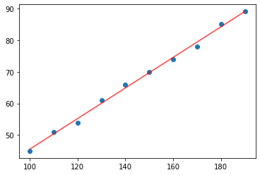
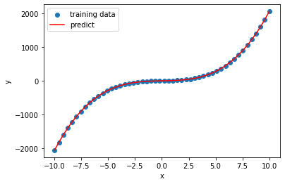
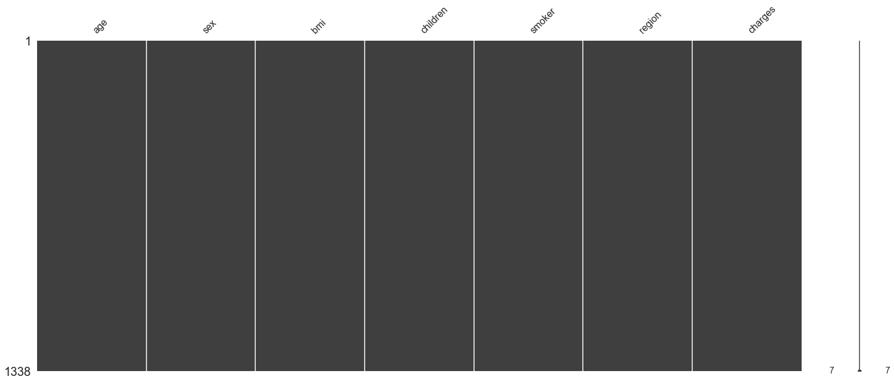
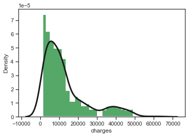
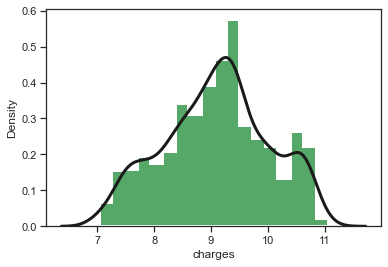

Python-人工智能数学基础14
14 回归分析
14.1 回归分析概述
14.1.2 一元线性回归模型
一般地, 如果自变量$x$与因变量$y$之间存在如下关系, 则可称为一元线性回归模型
| 变量 | 说明 |
|---|---|
| $x$ | 自变量 |
| $y$ | 因变量 |
| $\beta_0$ | 回归常数 |
| $\beta_1$ | 回归系数 |
| $\varepsilon$ | 随机误差 |
| $\sigma^2$ | 方差 |
14.2 回归方程推导及作用
14.2.1 回归方程
通过观察$n$组样本观察值, 求出未知参数$\beta_0$和$\beta_1$, 记为$\hat{\beta_0}, \hat{\beta_1}$, 则称$\hat{y}=\hat{\beta_0}+\hat{\beta_1}x
$为$y$关于$x$的经验回归方程, 简称回归方程
14.2.2 参数的最小二乘法估计
二乘~乘两次~平方
基本原则: 最优拟合直线应该使各点到回归直线的距离之和最小, 即平方和最小
求得
例14.2 求线性回归方程
某公司为了研究某一类产品的产值$x$(万元)和其毛利润$y$(万元)之间的关系:
|
| 月份 | 1 | 2 | 3 | 4 | 5 | 6 | 7 | 8 | 9 | 10 |
|---|---|---|---|---|---|---|---|---|---|---|
| 产值x | 100 | 110 | 120 | 130 | 140 | 150 | 160 | 170 | 180 | 190 |
| 毛利润y | 45 | 51 | 54 | 61 | 66 | 70 | 74 | 78 | 85 | 89 |
求毛利润$y$关于产值$x$的线性回归方程
$n=10, \bar x=\frac{1}{n}\Sigma^n_{i=1}x_i=145, \bar y=\frac{1}{n}\Sigma^n_{i=1}y_i=67.3$
|
(10, 145.0, 67.3)
$L_{xx}=\Sigma^n_{i=1}x^2_i-n\bar x^2=8250$
$L_{xy}=\Sigma^n_{i=1}x_iy_i-n\bar x\bar y=3985$
|
(8250.0, 3985.0)
$\hat{\beta_1}=\frac{L_{xy}}{L_{xx}}=\frac{3985}{8250}=0.48303$
$\hat{\beta_0}=\bar y-\hat{\beta_1}\bar x=67.3-0.48303 * 145 = -2.73935$
得回归方程:
$\hat y = -2.73935+0.48303x$
|
(-2.739393939393949, 0.48303030303030303)
用sklearn实现线性回归方程
|
(-2.739393939393949, 0.48303030303030303)
|

14.2.3 方差$\sigma^2$的估计
$\sigma^2$的无偏估计$(E(\hat{\sigma^2})=0)\hat{\sigma^2}$:
14.3 回归直线拟合度
14.3.1 因变量y变化的指标项
总离差平方和(SST): $\Sigma^n_{i=1}(y_i-\bar y_i)^2$, 反映了因变量的$n$个观察值$y_i$与其均值$\bar y$的总离差
回归平方和(SSR): $\Sigma^n_{i=1}(\hat y_i-\bar y_i)^2$, 反映了因变量的总变化中, 有$x$与$y$之间的线性关系引起的$y$的变化部分
残差平方和(SSE): $\Sigma^n_{i=1}(y_i-\hat y_i)^2$, 反映了除$x$对$y$的线性影响之外的其他因素对$y$变化的作用, 不能由回归直线来解释$y$的变化部分
SST = SSR + SSE
14.3.2 判定系数
其实就是皮尔森相关系数的平方…
14.4 线性回归的模型检验
14.4.1 线性关系的显著性检验
14.4.2 回归系数的显著性检验
代公式吧..累了
14.5 利用回归直线进行估计和预测
预测区间估计: 对于自变量$x$的给定值$x_0$, 对$y$的预测值$\hat{y_0}$作点估计以区间估计(个别值)
置信区间估计: 对于自变量$x$的给定值$x_0$, 估计$y_0$的平均值及估计区间, 即估计平均值$E(\hat{y_0})$
代公式吧..累了
14.6 多元与曲线回归问题
14.6.1 多元线性回归分析
多元线性回归就是多个自变量与一个因变量的线性回归问题
直接举例吧, 不证明了
例14.8
设有1个表示4个特征(自变量)和1个因变量的数据集:
|
| x1 | x2 | x3 | x4 | y | |
|---|---|---|---|---|---|
| 0 | 2104 | 5 | 1 | 15 | 368 |
| 1 | 1416 | 3 | 2 | 10 | 200 |
| 2 | 1534 | 3 | 2 | 5 | 280 |
| 3 | 852 | 2 | 1 | 7 | 126 |
利用”最小二乘法”求解回归模型时, 需要将特征(自变量)和因变量分解:
$\mathbf{X}= \begin{bmatrix}
1 & 2104 & 5 & 1 & 15 \\
1 & 1416 & 3 & 2 & 10 \\
1 & 1534 & 3 & 2 & 5 \\
1 & 852 & 2 & 1 & 7
\end{bmatrix}$,
$\mathbf{Y}= \begin{bmatrix}
368 \\
200 \\
280 \\
126
\end{bmatrix}$, $\mathbf{X}$增加1列对应的是$\beta_0$的系数
|
(matrix([[ 1, 2104, 5, 1, 15],
[ 1, 1416, 3, 2, 10],
[ 1, 1534, 3, 2, 5],
[ 1, 852, 2, 1, 7]]),
matrix([[368],
[200],
[280],
[126]]))
带入参数公式:$\beta=(\mathbf X^T\mathbf X)^{-1}(\mathbf X^T\mathbf Y)$, 解得
|
matrix([[-5632.],
[ 8.],
[-4096.],
[ 0.],
[ 0.]])
$y=-5632+8x_1-4096x_2$
14.6.2 曲线回归分析
曲线回归通常才用代数代换法把非线性形式转换为线性形式处理
14.7 Python 工具包
14.7.2 利用statsmodels实现回归分析
例14.11
设产生50~个-10~10的等差数列数作为自变量$x$, 因变量为$y=3+6x+2x^3+e$, 其中$e$为误差项, $e\sim N(0, 1)$
|
回归方程的参数 === [2.98049789 6.02186784 1.99927762]

| Dep. Variable: | y | R-squared: | 1.000 |
|---|---|---|---|
| Model: | OLS | Adj. R-squared: | 1.000 |
| Method: | Least Squares | F-statistic: | 2.098e+07 |
| Date: | Mon, 25 Jul 2022 | Prob (F-statistic): | 1.44e-140 |
| Time: | 15:39:09 | Log-Likelihood: | -64.732 |
| No. Observations: | 50 | AIC: | 135.5 |
| Df Residuals: | 47 | BIC: | 141.2 |
| Df Model: | 2 | ||
| Covariance Type: | nonrobust |
| coef | std err | t | P>|t| | [0.025 | 0.975] | |
|---|---|---|---|---|---|---|
| const | 2.9805 | 0.129 | 23.138 | 0.000 | 2.721 | 3.240 |
| x1 | 6.0219 | 0.055 | 109.986 | 0.000 | 5.912 | 6.132 |
| x2 | 1.9993 | 0.001 | 2486.102 | 0.000 | 1.998 | 2.001 |
| Omnibus: | 4.258 | Durbin-Watson: | 1.994 |
|---|---|---|---|
| Prob(Omnibus): | 0.119 | Jarque-Bera (JB): | 3.257 |
| Skew: | 0.437 | Prob(JB): | 0.196 |
| Kurtosis: | 3.894 | Cond. No. | 401. |
Notes:
[1] Standard Errors assume that the covariance matrix of the errors is correctly specified. [statsmodels中的summary解读（使用OLS）](https://blog.csdn.net/zm147451753/article/details/83107535) #### 14.8 综合分析——个人医疗保费预测服务 保险公司向保险人收取的保险费，必须高于支付给被保险人的保险费才能获利。 以医疗费用为例，通过分析病人的数据，来预测这部分群体的平均医疗费用，为年度保费价格的设定提供参考。 通过不同病人的病人的数据来预测医疗费用，因为因变量是一个连续的值，所以这个问题是一个回归问题。 ##### 准备工作：调用相关库
|
|
|
|
| age | sex | bmi | children | smoker | region | charges | |
|---|---|---|---|---|---|---|---|
| 0 | 19 | female | 27.900 | 0 | yes | southwest | 16884.92400 |
| 1 | 18 | male | 33.770 | 1 | no | southeast | 1725.55230 |
| 2 | 28 | male | 33.000 | 3 | no | southeast | 4449.46200 |
| 3 | 33 | male | 22.705 | 0 | no | northwest | 21984.47061 |
| 4 | 32 | male | 28.880 | 0 | no | northwest | 3866.85520 |
</div>
| 变量 | 描述 |
|---|---|
| age | 年龄(不超过64岁) |
| sex | 性别 |
| bmi | 体重(kg)/身高(米)² |
| children | 孩子/受抚养者数量 |
| smoker | 吸烟情况 |
| region | 居住地(美国各地理区域) |
| charges | 因变量, 当前数据人上年度保险的额度 |
|
age int64
sex object
bmi float64
children int64
smoker object
region object
charges float64
dtype: object
|
| age | bmi | children | charges | |
|---|---|---|---|---|
| count | 1338.000000 | 1338.000000 | 1338.000000 | 1338.000000 |
| mean | 39.207025 | 30.663397 | 1.094918 | 13270.422265 |
| std | 14.049960 | 6.098187 | 1.205493 | 12110.011237 |
| min | 18.000000 | 15.960000 | 0.000000 | 1121.873900 |
| 25% | 27.000000 | 26.296250 | 0.000000 | 4740.287150 |
| 50% | 39.000000 | 30.400000 | 1.000000 | 9382.033000 |
| 75% | 51.000000 | 34.693750 | 2.000000 | 16639.912515 |
| max | 64.000000 | 53.130000 | 5.000000 | 63770.428010 |
(1) 缺失值处理
- 若缺失值意义不大, 可以直接删除
如果缺失值有意义:
缺失值较少, 可以直接去掉
用已有的值的平均值或众数代替缺失值
用已知的数据作回归模型, 进行预测, 再用其他特征数据预测缺失值
|
<AxesSubplot:>

可惜了, 没有缺失值
2 探索数据和准备数据
(2) 特征工程
从原始数据中提取到的特征的好坏直接影响模型的效果, 特征工程就是从原式数据中最大限度地提取特征, 以供机器学习和算法使用
| 类型 | 提取方法 |
|---|---|
| 数值类型 | 直接使用或进行标准化处理 |
| 时间序列 | 转化成单独的年月日 |
| 分类数据 | 使用标签编码(类别只有两个, 如男=1, 女=0)或独热编码(类别超过两个) |
| 其他类型 | 独热编码 |
标签编码: 使用map函数对数据进行重新定义Pandas中的宝藏函数-map
|
| age | sex | bmi | children | smoker | region | charges | |
|---|---|---|---|---|---|---|---|
| 0 | 19 | 0 | 27.900 | 0 | 1 | southwest | 16884.92400 |
| 1 | 18 | 1 | 33.770 | 1 | 0 | southeast | 1725.55230 |
| 2 | 28 | 1 | 33.000 | 3 | 0 | southeast | 4449.46200 |
| 3 | 33 | 1 | 22.705 | 0 | 0 | northwest | 21984.47061 |
| 4 | 32 | 1 | 28.880 | 0 | 0 | northwest | 3866.85520 |
|
| region_northeast | region_northwest | region_southeast | region_southwest | |
|---|---|---|---|---|
| 0 | 0 | 0 | 0 | 1 |
| 1 | 0 | 0 | 1 | 0 |
| 2 | 0 | 0 | 1 | 0 |
| 3 | 0 | 1 | 0 | 0 |
| 4 | 0 | 1 | 0 | 0 |
| ... | ... | ... | ... | ... |
| 1333 | 0 | 1 | 0 | 0 |
| 1334 | 1 | 0 | 0 | 0 |
| 1335 | 0 | 0 | 1 | 0 |
| 1336 | 0 | 0 | 0 | 1 |
| 1337 | 0 | 1 | 0 | 0 |
1338 rows × 4 columns
|
汇总: (1338, 10)
| age | sex | bmi | children | smoker | charges | region_northeast | region_northwest | region_southeast | region_southwest | |
|---|---|---|---|---|---|---|---|---|---|---|
| 0 | 19 | 0 | 27.900 | 0 | 1 | 16884.92400 | 0 | 0 | 0 | 1 |
| 1 | 18 | 1 | 33.770 | 1 | 0 | 1725.55230 | 0 | 0 | 1 | 0 |
| 2 | 28 | 1 | 33.000 | 3 | 0 | 4449.46200 | 0 | 0 | 1 | 0 |
| 3 | 33 | 1 | 22.705 | 0 | 0 | 21984.47061 | 0 | 1 | 0 | 0 |
| 4 | 32 | 1 | 28.880 | 0 | 0 | 3866.85520 | 0 | 1 | 0 | 0 |
age, bmi, children为连续型数据, 采用标准化的特征提取
|
| age | sex | bmi | children | smoker | charges | region_northeast | region_northwest | region_southeast | region_southwest | |
|---|---|---|---|---|---|---|---|---|---|---|
| 0 | -1.438764 | 0 | -0.453320 | -0.908614 | 1 | 16884.92400 | 0 | 0 | 0 | 1 |
| 1 | -1.509965 | 1 | 0.509621 | -0.078767 | 0 | 1725.55230 | 0 | 0 | 1 | 0 |
| 2 | -0.797954 | 1 | 0.383307 | 1.580926 | 0 | 4449.46200 | 0 | 0 | 1 | 0 |
| 3 | -0.441948 | 1 | -1.305531 | -0.908614 | 0 | 21984.47061 | 0 | 1 | 0 | 0 |
| 4 | -0.513149 | 1 | -0.292556 | -0.908614 | 0 | 3866.85520 | 0 | 1 | 0 | 0 |
(3) 特征相关性分析
|
相关矩阵:
age sex bmi children smoker charges \
age 1.000000 -0.020856 0.109272 0.042469 -0.025019 0.299008
sex -0.020856 1.000000 0.046371 0.017163 0.076185 0.057292
bmi 0.109272 0.046371 1.000000 0.012759 0.003750 0.198341
children 0.042469 0.017163 0.012759 1.000000 0.007673 0.067998
smoker -0.025019 0.076185 0.003750 0.007673 1.000000 0.787251
charges 0.299008 0.057292 0.198341 0.067998 0.787251 1.000000
region_northeast 0.002475 -0.002425 -0.138156 -0.022808 0.002811 0.006349
region_northwest -0.000407 -0.011156 -0.135996 0.024806 -0.036945 -0.039905
region_southeast -0.011642 0.017117 0.270025 -0.023066 0.068498 0.073982
region_southwest 0.010016 -0.004184 -0.006205 0.021914 -0.036945 -0.043210
region_northeast region_northwest region_southeast \
age 0.002475 -0.000407 -0.011642
sex -0.002425 -0.011156 0.017117
bmi -0.138156 -0.135996 0.270025
children -0.022808 0.024806 -0.023066
smoker 0.002811 -0.036945 0.068498
charges 0.006349 -0.039905 0.073982
region_northeast 1.000000 -0.320177 -0.345561
region_northwest -0.320177 1.000000 -0.346265
region_southeast -0.345561 -0.346265 1.000000
region_southwest -0.320177 -0.320829 -0.346265
region_southwest
age 0.010016
sex -0.004184
bmi -0.006205
children 0.021914
smoker -0.036945
charges -0.043210
region_northeast -0.320177
region_northwest -0.320829
region_southeast -0.346265
region_southwest 1.000000
相关矩阵的上三角表示:
age sex bmi children smoker charges \
age 0.0 -0.020856 0.109272 0.042469 -0.025019 0.299008
sex -0.0 0.000000 0.046371 0.017163 0.076185 0.057292
bmi 0.0 0.000000 0.000000 0.012759 0.003750 0.198341
children 0.0 0.000000 0.000000 0.000000 0.007673 0.067998
smoker -0.0 0.000000 0.000000 0.000000 0.000000 0.787251
charges 0.0 0.000000 0.000000 0.000000 0.000000 0.000000
region_northeast 0.0 -0.000000 -0.000000 -0.000000 0.000000 0.000000
region_northwest -0.0 -0.000000 -0.000000 0.000000 -0.000000 -0.000000
region_southeast -0.0 0.000000 0.000000 -0.000000 0.000000 0.000000
region_southwest 0.0 -0.000000 -0.000000 0.000000 -0.000000 -0.000000
region_northeast region_northwest region_southeast \
age 0.002475 -0.000407 -0.011642
sex -0.002425 -0.011156 0.017117
bmi -0.138156 -0.135996 0.270025
children -0.022808 0.024806 -0.023066
smoker 0.002811 -0.036945 0.068498
charges 0.006349 -0.039905 0.073982
region_northeast 0.000000 -0.320177 -0.345561
region_northwest -0.000000 0.000000 -0.346265
region_southeast -0.000000 -0.000000 0.000000
region_southwest -0.000000 -0.000000 -0.000000
region_southwest
age 0.010016
sex -0.004184
bmi -0.006205
children 0.021914
smoker -0.036945
charges -0.043210
region_northeast -0.320177
region_northwest -0.320829
region_southeast -0.346265
region_southwest 0.000000
相关矩阵：
age age 0.000000
sex -0.020856
bmi 0.109272
children 0.042469
smoker -0.025019
...
region_southwest charges -0.000000
region_northeast -0.000000
region_northwest -0.000000
region_southeast -0.000000
region_southwest 0.000000
Length: 100, dtype: float64
| 第一个变量 | 第二个变量 | 相关性 | |
|---|---|---|---|
| 0 | smoker | charges | 0.787251 |
| 1 | age | charges | 0.299008 |
| 2 | bmi | region_southeast | 0.270025 |
| 3 | bmi | charges | 0.198341 |
| 4 | age | bmi | 0.109272 |
自变量与因变量charges的相关性按降序排列:
|
charges 1.000000
smoker 0.787251
age 0.299008
bmi 0.198341
region_southeast 0.073982
children 0.067998
sex 0.057292
region_northeast 0.006349
region_northwest -0.039905
region_southwest -0.043210
Name: charges, dtype: float64
(4) 特征选择
选取各个特征相关系数最大的前6个特征, 重新构建数据集
|
| smoker | age | bmi | region_southeast | children | sex | charges | |
|---|---|---|---|---|---|---|---|
| 0 | 1 | -1.438764 | -0.453320 | 0 | -0.908614 | 0 | 16884.92400 |
| 1 | 0 | -1.509965 | 0.509621 | 1 | -0.078767 | 1 | 1725.55230 |
| 2 | 0 | -0.797954 | 0.383307 | 1 | 1.580926 | 1 | 4449.46200 |
| 3 | 0 | -0.441948 | -1.305531 | 0 | -0.908614 | 1 | 21984.47061 |
| 4 | 0 | -0.513149 | -0.292556 | 0 | -0.908614 | 1 | 3866.85520 |
3 建立模型
(1) 分离自变量和因变量
|
(2) 检查因变量数据是否满足正态分布
|
###有警告信息###
<AxesSubplot:xlabel='charges', ylabel='Density'>

保险分布的数据右偏(平均数大于中位数)
可以采用取对数, 去平方根的方法将大的数据向左移
|
###有警告信息###
<AxesSubplot:xlabel='charges', ylabel='Density'>

(3) 划分数据集, 建立训练数据集和测试数据集
|
训练集 (936, 6) ，测试集 (402, 6)
(4) 使用线性回归创建模型
|
最佳拟合线:截距 8.851551231348216
回归系数： [ 1.53318059 0.48875255 0.08953472 -0.07628352 0.1276445 -0.08411224]
4 评估模型
|
个人医保数据线性回归模型的决定系数即R平方为： 0.7830070691295015
个人医保数据线性回归模型的平均绝对误差为： 0.2707571270860692
个人医保数据线性回归模型的均方误差MSE为： 0.17131210181347262
个人医保数据线性回归模型的中值绝对误差为： 0.14746506518623992
个人医保数据线性回归模型的可解释方差值为： 0.7831735070420169
个人医保数据线性回归模型的判定系数即R平方为： 0.7830070691295015
通过交叉验证来持续优化模型(十折交叉验证)
十折交叉验证，英文名叫做10-fold cross-validation，用来测试算法准确性。是常用的测试方法。将数据集分成十份，轮流将其中9份作为训练数据，1份作为测试数据，进行试验。
|
最佳拟合线:截距 8.851551231348216
回归系数： [ 1.53318059 0.48875255 0.08953472 -0.07628352 0.1276445 -0.08411224]
个人医保数据线性回归模型的平均绝对误差为： 0.28154076344034734
个人医保数据线性回归模型的均方误差MSE为： 0.20010936615767003
个人医保数据线性回归模型的中值绝对误差为： 0.13490158250103956
个人医保数据线性回归模型的可解释方差值为： 0.7630797649634316
个人医保数据线性回归模型的判定系数即R平方为： 0.7630793987615034
14.9 高手点拨
| 解析法 | 梯度下降法 |
|---|---|
| 要求$(\mathbf X^T\mathbf X)$必须可逆 | 不要求$(\mathbf X^T\mathbf X)$可逆 |
| 求$(\mathbf X^T\mathbf X)$的逆费时较多, 当特征较多时运算很慢 | 特征较多时运算不会特别慢 |
| 不需要特征缩放 | 需要特征缩放 |
| 只需计算一次就能求解 | 需要多次迭代 |
| 不需要选择学习步长 | 需要选择学习步长 |
| 对于更复杂的问题可能求不出解 | 可用于更复杂的问题, 可移植性强 |
具体地说, 只要特征变量的数量小于10000, 通常会使用解析法, 而不是梯度下降法